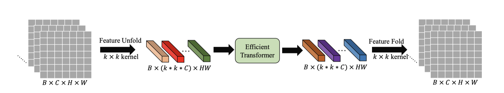
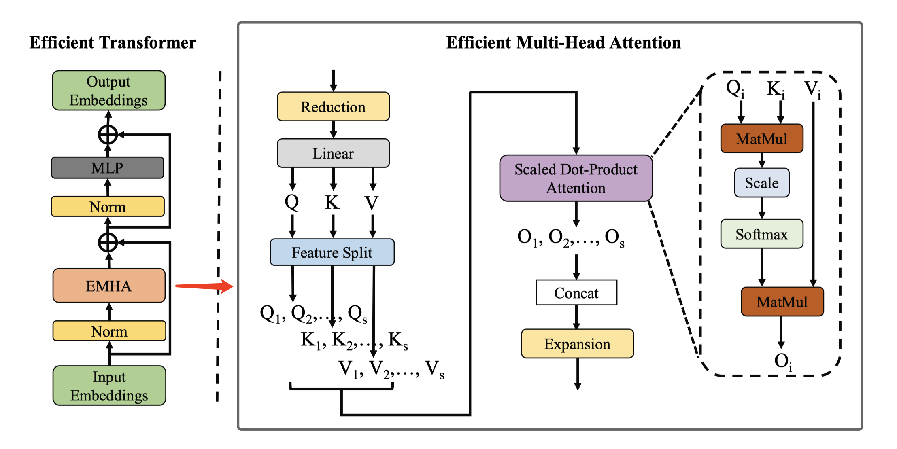
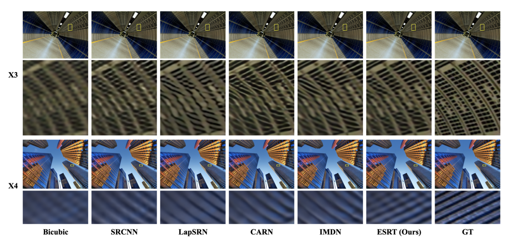
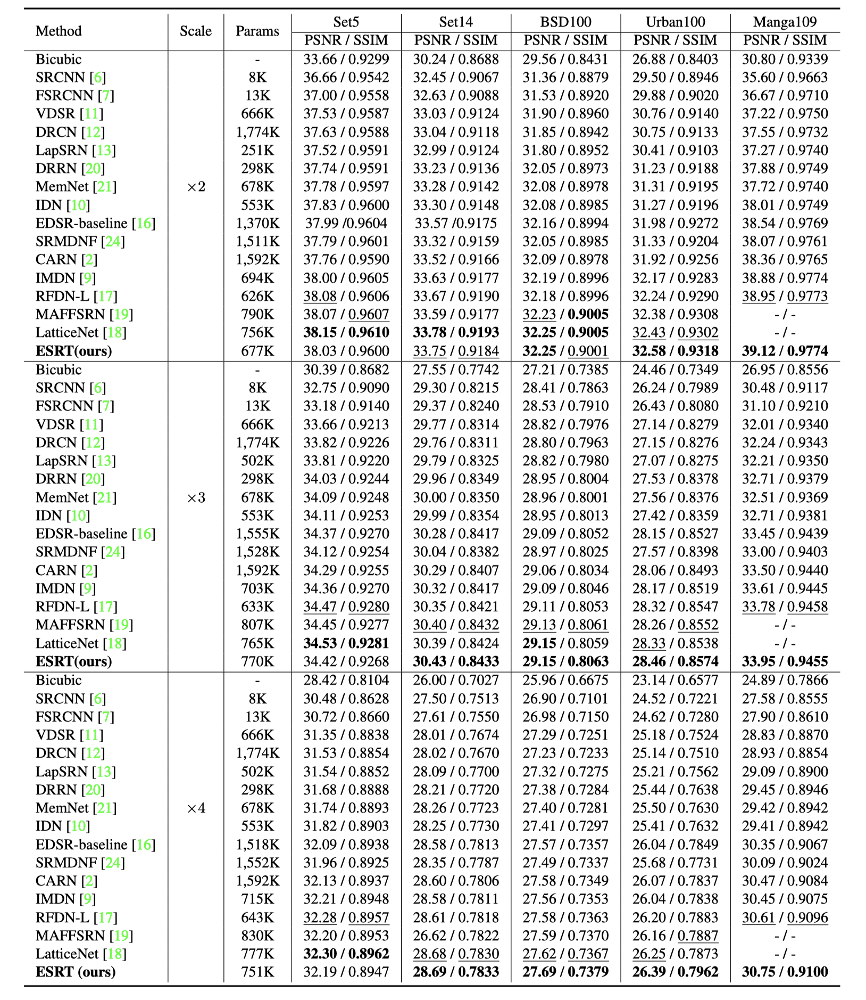

Transformer for Single Image Super-ResolutionZhisheng Lu1# Juncheng Li2# Hong Liu1* Chaoyan Huang3 Linlin Zhang1 Tieyong Zeng21 Peking University Shenzhen Graduate School 2 The Chinese University of Hong Kong 3 Nanjing University of Posts and Telecommunications#Co-first authors, *Corresponding author Contact us: cvjunchengli@gmail.con; zhisheng_lu@pku.edu.cn |
Abstract
Single image super-resolution (SISR) has witnessed great strides with the development of deep learning. However, most existing studies focus on building more complex networks with a massive number of layers. Recently, more and more researchers start to explore the application of Transformer in computer vision tasks. However, the heavy computational cost and high GPU memory occupation of the vision Transformer cannot be ignored. In this paper, we propose a novel Efficient Super-Resolution Transformer (ESRT) for SISR. ESRT is a hybrid model, which consists of a Lightweight CNN Backbone (LCB) and a Lightweight Transformer Backbone (LTB). Among them, LCB can dynamically adjust the size of the feature map to extract deep features with a low computational costs. LTB is composed of a series of Efficient Transformers (ET), which occupies a small GPU memory occupation, thanks to the specially designed Efficient Multi-Head Attention (EMHA). Extensive experiments show that ESRT achieves competitive results with low computational cost. Compared with the original Transformer which occupies 16,057M GPU memory, ESRT only occupies 4,191M GPU memory.
Motivation
As shown in the figure below, the inner areas of the boxes with the same color are similar to each other. Therefore, these similar image patches can be used as reference images for each other, so that the texture details of the certain patch can be restored with reference patches. Inspired by this, we introduce the Transformer into the SISR task since it has a strong feature expression ability to model such a long-term dependency in the image. In recent years, some Vision-Transformer have been proposed for computer vision tasks. However, these methods often occupy heavy GPU memory, which greatly limits their flexibility and application scenarios. Moreover, these methods cannot be directly transferred to SISR since the image restoration task often take a larger resolution image as input, which will take up huge memory. To solve this, we aim to explore a more efficient vision-Transformer for SISR.
|
| Examples of similar patches in images. These similar patches can help restore details from each other. |
ESRT
 |
| The architecture of the proposed Efficient Super-Resolution Transformer. |
|  |
| The complete pre- and post-processing for the Efficient Transformer (ET). |
|  |
| Architecture of Efficient Transformer. EMHA is the Efficient Multi-Head Attention. MatMul is the matrix multiplication. |
Visual Results
|  |
PSNR/SSIM Results
|  |
Downloads
| Paper | : [ Paper ] |
| Supp Material | : [ Supplementary Material ] |
| Source Code | : [ Code ] |
| ESRT Result | : [ Reconstruction Results ] |
Statement
BibTex